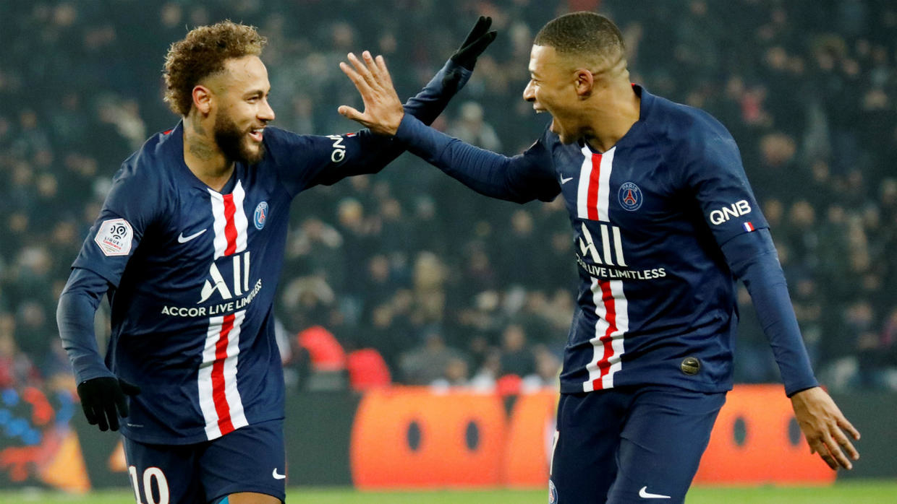

A Paris Saint-Germain Football Club (rövidítve: Paris SG vagy PSG) egy francia labdarúgócsapat, melyet 1970-ben alapítottak a francia fővárosban, Párizsban. A PSG nemcsak Párizs, de Franciaország egyik legmeghatározóbb, legismertebb focicsapata is. A klub stadionja a Parc des Princes, amely 46 480 néző befogadására alkalmas. 1974-es feljutása óta folyamatosan a francia első osztály (Ligue 1) tagja. Alapító tagja volt a G-14 nevű konglomerátumnak, melyet az Európai Klubszövetség váltott fel.
Csapat:

(Neymar,Mbappe)
1 Keylor NAVAS
NAVAS, Keylor
RICO, Sergio
BULKA, Marcin
INNOCENT, Garissone
SAIDANI, Yanis
BERNAT, Juan
KIMPEMBE, Presnel
KURZAWA, Layvin
DIALLO, Abdou
KEHRER, Thilo
DAGBA, Colin
BAKKER, Mitchel
MARQUINHOS, Corrêa
SILVA, Thiago
KOUASSI, Tanguy
MBE SOH, Loïc
MEUNIER, Thomas
VERRATTI, Marco
GUEYE, Idrissa
HERRERA, Ander
PAREDES, Leandro
SIMONS, Xavi
DI MARÍA, Ángel
DRAXLER, Julian
AOUCHICHE, Adil
NEYMAR, Júnior
MBAPPÉ, KylianA
SARABIA, Pablo
CHOUPO-MOTING,
CAVANI, Édinson
ICARDI, Mauro